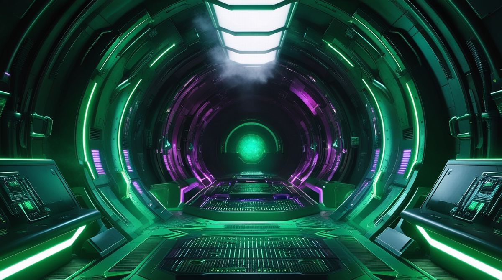

Series / 002
Terminal

Terminal is the quiet machine side of DARK NETWORK RADIO.
Designed for long coding sessions, focused work, and uninterrupted concentration.
Minimal melodies. Deep machine ambience. Continuous transmission.
TRANSMISSION PROFILE
- Coding
- Deep work
- Long sessions
- Machine ambience